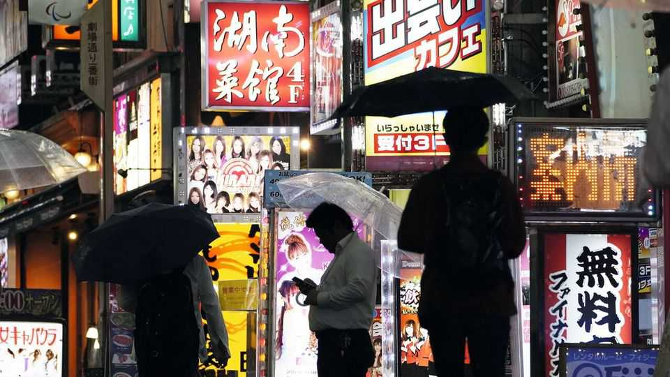

Sex tourists fuel outrage about vice in Japan
The debates do not have women’s interests at heart
June 4th 2026

MAI, a 34-year-old woman in Tokyo, used to work at a hospital. But when covid-19 overwhelmed the wards, she found her work too stressful. A single mother, she also needed money for her family. Lured by higher pay, she entered the sex trade, first working as a porn actress before becoming a deriheru or “delivery health” worker—slang for call-girls who visit clients at home or in hotels. For a two-hour session, she earns ¥30,000 ($190).
Mai is among hundreds of thousands of women working in Japan’s sprawling sex industry. The business, thought to be worth ¥2trn-5trn ($12bn-31bn) a year, is woven into male social life. One study in 2022 found that 48% of Japanese men had paid for sex at some point, compared with 11% in Britain. Hagiwara, a 63-year-old man in Tokyo, recalls being taken to a brothel by senior colleagues after joining a company, as a rite of passage. Emu, a man in his 30s, says “most men around me have been at least once.”
Lately, however, lawmakers’ tolerance for the industry has come under much strain. Two recent triggers have encouraged Japanese to re-examine the confusing thicket of laws and conventions that govern how sex work is policed. One was an outrageous crime: last year authorities rescued a 12-year-old Thai girl who had been trafficked to Japan and forced to work at a sex shop in Tokyo.
The second concern has been the growing visibility of women who sell sex around Okubo Park, near Tokyo’s red-light district (where the haggling more ordinarily goes on behind neon-lit doors). Relatively few women are involved in this. Nonetheless, solicitation (waiting for or approaching clients in public) is illegal in Japan. The sight of women openly waiting for clients has unsettled the public.
Compounding the public debate is the fact that some of their customers are foreign tourists, lured to Japan by the cheapness of the yen. Videos of them approaching women in Okubo Park have spread rapidly online. “It is truly lamentable,” said Kamiya Sohei, leader of the right-wing populist Sanseito party, in a video. Behind the outrage lies a sense of wounded pride: during Japan’s boom years in the 1970s and 1980s, it was Japanese men who went abroad for sex.
The authorities have decided to act—at least where the streetwalkers are concerned. Recently women around Okubo Park have been detained or arrested. Yet campaigners say it is unfair that authorities have not also been trying to punish the buyers. “Women are taken away by the police—while the men who buy sex stand beside them smirking,” says Kanajiri Kazuna of PAPS, a women’s-rights group. In November an opposition lawmaker raised this disparity in parliament. In response Takaichi Sanae, the prime minister, ordered the justice ministry to re-examine current practices and consider reforms.
The prospect of change has sparked very broad debate about how Japan could improve its policing of sex work. Some Japanese feminists would like their country to implement the Nordic style of regulation adopted by Sweden, France and others, which criminalises buying sex while shielding sellers themselves from prosecution. “Buying sex is a form of violence against women,” says Ms Kanajiri.
Other Japanese argue that getting tougher on buyers will drive sex work underground, leaving women more exposed to violence. Some want the industry fully legalised and regulated, as in Germany and the Netherlands. Nakayama Misato of Siente, a sex-work advocacy group, argues that criminalisation can mean that women are treated merely as victims, ignoring their agency. “Doing sex work is not a bad thing—it’s a valid way of making a living.”
To be more than skin deep, any changes would have to apply not only to streetwalking but to Japan’s vast indoor sex-industry, the laws for which are riddled with loopholes and selectively enforced. Consider the practice of “soapland”, in which customers ostensibly pay to be bathed; if sex happens to take place in the process, officials generally turn a blind eye. Takao Yasuo of Curtin University says this is typical of Japan’s approach to regulating the sex industry. The priority is to keep vice decorously out of public view.
A big rethink seems unlikely. For now, the justice ministry is narrowly focused on street prostitution. Taking care of that is “the lowest-cost, highest-visibility form of enforcement available to the state”, notes Mr Takao. “Many lawmakers, especially conservatives, are sensitive to the idea of women becoming sexually promiscuous,” says Shiomura Ayaka, a lawmaker. Women openly soliciting sex in public have become symbols of social disorder. ■
For exclusive coverage of Asian politics, economics and security, sign up to Asia Bulletin, our weekly subscriber-only newsletter.